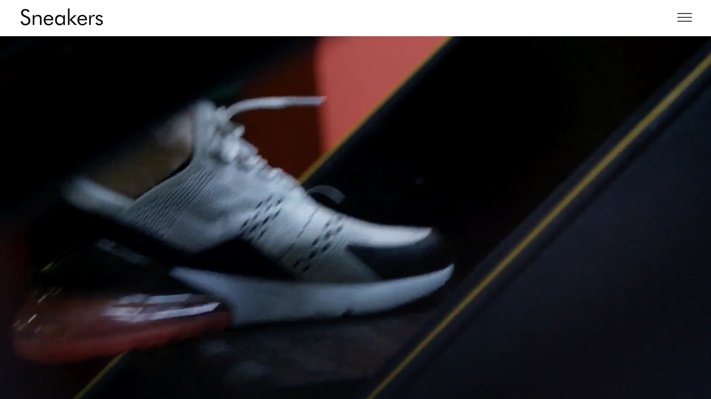

about
works
skills
Works

Sneaker
HTML/CSS/JavaScript/JQuery
制作期間 : 3日（1日あたり3〜4時間）
Adobe XDで作成されたデザインカンプをもとに、スニーカーをテーマにしたECサイト風ランディングページを制作しました。
基本構成はデザインカンプに沿って実装しつつ、ハンバーガーメニュー内のレイアウトは自分で考えてコーディングしています。
また、実際のデモサイトも参照し細かいアニメーションも正確に再現しています。
https://nabiii2003.github.io/nabiii2003.github.io.sneakers/